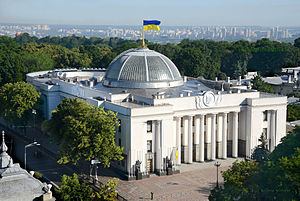

Пейзажна алея
Пейзажна алея давно стала улюбленим місцем відпочинку киян. Прокладена на початку 1980-х рр. за проектом архітектора Аврама Мілецького, вона пролягає по лінії оборонних споруд Х-ХІІІ ст. Із цієї висоти історичного Верхнього міста легко оглядається Поділ і Задніпров’я.У 2009 р. на Пейзажній алеї був облаштований дитячий сквер із лавками і величезними котами. У ньому встановлені фонтани у вигляді слоника та голів зебр, викладена мозаїкою 30-метрова кішка-стонога, лавочки у вигляді кролика, ворони, кота та інші фантастичні істоти, створені міським скульптором Костянтином Скретуцьким.У 2010 р. з’явилося продовження чудового дитячого парку, а саме — майданчик «Аліса в країні чудес». Дитячі гірки зроблені за мотивами однойменного роману: тут і веселий кролик, і чеширский кіт, і чарівна гусениця.
Верховна Рада
Верховна Рада — одна з кращих архітектурних споруд радянського періоду. В центральній частині — восьмикутний сесійний зал, перекритий скляним напівсферичним куполом. У 1991 р. тут була проголошена Державна Незалежність України. Зараз — це головний політичний центр країни, в сесійні дні на площі часто проходять мітинги і пікети. Архітектура будівлі Верховної Ради втілює притаманні тому часу класичні прийоми і форми. Світлий колір і співзвучність природному ландшафту роблять його справді київською спорудою. Будівля Верховної Ради є зразком української архітектурної класики. Будинок спроектований в суворій прямокутно-симетричній формі, є невисоким — лише три поверхи. Його вінчає купол з металу і скла, через яке освітлюється зал для сесійних засідань. Плоска покрівля споруди надає йому композиційної гармонії.Вестибюль головного входу будівлі Верховної Ради простий за архітектурними формами, безпосередньо поєднаний сходами зі світлими парадними кулуарами-фойє другого поверху, прикрашеними рядом пристінних колон із мармуру. Все, включаючи дверні ручки, виконано за авторськими проектами, забезпечуючи єдність стилю в оформленні інтер’єрів. За спеціальними ескізами та проектами виготовлялися люстри, меблі, розписувалися плафони т. д. В інтер’єрі вестибюля й головного фойє використаний класичний художній прийом органічного поєднання архітектури і монументального живопису. Слід зазначити, перш за все, велику художню композицію «Квітуча Україна», виконану в плафоні ленінградськими художниками В. і Б. Щербаковими. Розташований в центральній частині стелі головного фойє над парадними сходами, цей плафон ніби ілюзорно продовжує простір інтер’єру.Значне місце в інтер’єрах посідають мотиви українського народного декоративного мистецтва, які знайшли відображення в ліпних деталях, розписі та інкрустації по дереву і т. д. Ліпні деталі, інкрустації, декоративне оздоблення, розпис приміщень споруди мають національний характер.
Аджимушкайські каменоломні
Аджимушкайські підземні виробки існують понад півтора століття. За час видобутку каменю, з якого будувалося місто Керч, вони утворили складну систему ходів, що тягнеться на багато кілометрів. У роки Великої Вітчизняної війни Аджимушкайські каменоломні стали базою партизанського руху. У травні 1942 р. гітлерівці прорвали оборону радянських військ на Ак-Монайських позиціях. Знесилені загони з боями відступали до Керчі. В районі Аджимушкая 14 і 15 травня розгорнулися особливо запеклі бої. Але оборона була прорвана, і бійці змушені були сховатися в підземеллях. Організували два окремих гарнізони: у Великих каменоломнях — чисельністю приблизно 10 000 осіб, у Малих — до 3 000.Героїв чекали суворі випробування. Аджимушкайськікаменоломні до оборони завчасно не готували, тому спеціальних запасів зброї, боєприпасів, продовольства, медикаментів не було. На видачу продовольства довелося встановити суворі норми. Особливо важко було з водою. Колодязі опинилися зовні, і воду можна було добувати тільки в бою. Положення воїнів у Великих (Центральних) Аджимушкайських каменоломнях ускладнювалося і тим, що в них знаходилося більше 500 поранених бійців і офіцерів, тут ховалися також тисячі жінок, дітей і людей похилого віку — мешканців міста та прилеглих селищ.У пам’ять про героїв звели монументальний пам’ятник — два величезних бетонних пілона, що обрисами нагадують скелі Аджимушкая, підносяться над входом в підземелля. На них висічені багатофігурні композиції, що зображують епізоди героїчної боротьби воїнів підземного гарнізону. У 1966 році організовано підземний військовий музей.